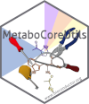
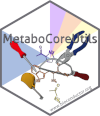

This workshop provides an overview of recent developments in Bioconductor to work with mass spectrometry data (MsExperiment, Spectra) and specifically LC-MS data (xcms) and walks through the preprocessing of a small data set emphasizing on selection of data-dependent settings for the individual preprocessing steps.
Covered topics are:
Data import and representation.
Accessing, subsetting and visualizing data.
Centroiding of profile mode MS data.
Chromatographic peak detection.
Empirically determine appropriate settings for the analyzed data set.
Evaluation of identified peaks.
Alignment (retention time correction).
Correspondence (grouping of chromatographic peaks across samples).
The full R code of all examples along with comprehensive descriptions is provided in the xcms-preprocessing.Rmd file. This file can be opened with e.g. RStudio which allows execution of the individual R commands (see section below for additionally required R packages). The R command rmarkdown::render("xcms-preprocessing.Rmd") would generate the html file xcms-preprocessing.html.
Citation
This workflow (and future versions) are deposited at Zenodo. To cite this version of the tutorial:
Johannes Rainer and Philippine Louail. xcmsTutorials version 1.1.0: Exploring and analyzing LC-MS data with Spectra and xcms. Zenodo, May 13, 2024. https://doi.org/10.5281/zenodo.11185521 .
Louail P, Brunius C, Garcia-Aloy M, Kumler W, Storz N, Stanstrup J, Treutler H, Vangeenderhuysen P, Witting M, Neumann S, Rainer J. xcms in Peak Form: Now Anchoring a Complete Metabolomics Data Preprocessing and Analysis Software Ecosystem. Anal Chem. 2025 Dec 8. doi: 10.1021/acs.analchem.5c04338. Epub ahead of print. PMID: 41359826.
Installation
The workshop files along with an R runtime environment including all required packages and the RStudio (Posit) editor are all bundled in a docker container. After installation, this docker container can be run on the computer and the code and examples from the workshop can be evaluated within this environment (without the need to install any additional packages or files).
This version of the workshop uses packages from Bioconductor release 3.22 (October 2025) and hence bases on Bioconductor’s docker container for that release (RELEASE_3_22). The required steps for installation are:
- If you don’t already have, install docker. Find installation information here.
- Get the docker image of this tutorial e.g. from the command line with
docker pull jorainer/xcms_tutorials:RELEASE_3_22. - Start the docker container, either through the Docker Desktop, or on the command line with
docker run \
-e PASSWORD=bioc \
-p 8787:8787 \
jorainer/xcms_tutorials:RELEASE_3_22- Enter
http://localhost:8787in a web browser and log in with usernamerstudioand passwordbioc. - In the RStudio server version: open any of the R-markdown (.Rmd) files in the vignettes folder and evaluate the R code blocks in that document.
For manual installation, an R version >= 4.5.0 is required as well as recent versions of the packages MsExperiment, Spectra and in particular the xcms. These can be installed using the code below:
install.packages("BiocManager")
BiocManager::install("jorainer/xcmsTutorials",
dependencies = TRUE, ask = FALSE, update = TRUE)Contribution
For contributions, see the RforMassSpectrometry contributions guideline.
Code of Conduct
See the RforMassSpectrometry Code of Conduct.
Additional documentation resources and tutorials
- Tutorial with additional examples and explanations for MS2-based annotations: https://jorainer.github.io/SpectraTutorials/
- Repository of the
MsCoreUtilspackage: https://rformassspectrometry.github.io/MsCoreUtils/ - Repository of the
MetaboCoreUtilspackage: https://rformassspectrometry.github.io/MetaboCoreUtils/ - Repository of the
Spectrapackage: https://rformassspectrometry.github.io/Spectra/ - Repository of the
MetaboAnnotationpackage: https://rformassspectrometry.github.io/MetaboAnnotation/ - Repository of the
CompoundDbpackage: https://rformassspectrometry.github.io/CompoundDb/
Acknowledgments
Thank you to Philippine Louail for fixing typos and suggesting improvements.